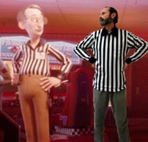

Twin Galaxies - a good idea outgrown
Saturday, August 10, 2013
If you’ve read my blog entries before, you already know that I’m a big retro arcade gamer and arcade game collector (amongst other things). The games themselves aren’t where my passion stops though - I also satisfy my curiosity by constantly researching and learning about topics related to whatever I’m doing.....something that the Internet has made much more possible than ever before! There is a great deal of satisfaction when it comes to learning, and I’m always researching and assimilating as much as I possibly can from whatever strikes my fancy at the time.
This past year, one of my passions has been researching video arcade history. And, of course, the famous Twin Galaxies International Scoreboard is always mentioned. This scoreboard was started in 1982 by Walter Day, who ran an arcade in the small town of Ottumwa, Iowa called Twin Galaxies. If you research Walter, you’ll find that he is genuinely a nice guy! Like everyone else at the time, he was taken up by the intense optimism surrounding arcades in the 1980s:
“I wanted to be a hero. I wanted to be the center of attention. I wanted the glory, I wanted the fame. I wanted the pretty girls to come up and say, ‘Hi, I see that you’re good at Centipede.’”
He thought that arcade gaming could be on par with national sports, and that arcade game high scores should be recorded. It led to the town of Ottumwa, Iowa proclaiming itself as “the video game capital of the world,” Walter creating a “U.S. National Video Game Team,” and popular magazines and newspapers of the time riding on the crazy novelty of it all. After all, the intense optimism surrounding technology and video games of the 1980s made it all possible - getting a high score on a video game was considered cooler than winning a regional sports championship! And Twin Galaxies was a place to submit your high score, and get an official printed certificate you could use to brag about your achievements! They invented themselves as the authority for gaming high scores with little more than good intentions.
Through it all, of course, you had to keep a sense of humor. After all, it really wasn’t entirely accurate ;-) It was the 1980s....it really didn’t matter if someone lied about their score because we were more concerned with getting nuked by the Russians....
That being said, some people took it way to seriously, and this only amplified over time. Twin Galaxies started accepting video tapes of people’s performance to encourage more score submission. By the late 1990s, they were more concerned with trying to prove people liars than keeping track of scores (I’m sure with good reason). Clichés and alliances formed within Twin Galaxies, and some manipulative high score holders used this to ensure that their high scores were not beaten by others (e.g. Billy Mitchell).
To make matters more complex, most competitive gamers were playing on consoles by the early 2000s, and Twin Galaxies had to shift focus to accommodate them. By the mid-2000s, the organization grew fragmented and more corrupted - Walter Day’s good intentions of the 1990s were swallowed up in a frenzy of people who fought to get high scores, fought to disprove high scores, and internal corruption that sometimes prevented both from happening. It was out of Walter’s hands....and good intentions....
Regardless, Twin Galaxies was the only organization keeping track of high scores, and more and more gamers were submitting their high scores to Twin Galaxies. By 2008, the Guinness Book of World Records started using them as the official source of game high scores, mainly because they lacked the staff to verify all of the game high scores themselves.

In 2010, Walter Day left Twin Galaxies to pursue his musical interests, but is still widely regarded by everyone in the game industry - even the 2012 Disney movie “Wreck it Ralph” payed tribute indirectly to Walter Day (who is well-known for wearing a striped referee shirt) by ensuring that the arcade operator in the movie wore the same striped referee shirt as shown to the right:
In 2012, Twin Galaxies was sold to two new owners, who now charge up to $75 for high score submissions.
For more information on Twin Galaxies, watch the following two documentaries:
The King of Kong: Fistful of Quarters (2007)
Chasing Ghosts: Beyond the Arcade (2007)
Also research some influential characters (Google, Wikipedia, forum posts, Youtube videos, etc.):
-
•Walter Day (founder of Twin Galaxies, all-around nice guy)
-
•Robert Mruczek (former Twin Galaxies referee, comes off as a total weirdo in Chasing Ghosts: Beyond the Arcade, but is actually a nice guy and extremely level-headed)
-
•Billy Mitchell (an arrogant All-American prick)
-
•Steve Wiebe (protagonist of The King of Kong: A Fistful of Quarters)
-
•Roy Shildt (somewhat eccentric, but surprisingly correct in his views of Twin Galaxies)
-
•Steve Sanders (friend of Billy Mitchell, and quite honest)
So where does Twin Galaxies fit in today? Well, they are still the #1 source for Guinness Book of World Records game high scores, and people still submit new high scores to them (although I’m sure that has gone down since they started charging money for submissions ;-).
However, unless you are a die-hard gamer bent on beating world records, you probably don’t even visit their website, and chances are that fewer and fewer gamers will care about Twin Galaxies in the future. There are a variety of different reasons for this:
-
•Today, most games are played online (e.g. Xbox Live) and leaderboards are maintained by the game developers themselves. This is probably going to become the norm across many (if not all) game genres in the future. As a result, game high scores will likely be maintained by the game developers in the future, rather than by a third-party organization.
-
•Those who want recognition can post videos of their gameplay online easily. Did you know that gameplay videos are more common on Youtube than any other type of video?
-
•There are other, more desirable, venues for game recognition today. Recognition of achievements by old organizations (e.g. Guinness, Twin Galaxies) isn’t as desirable today compared to getting recognition from others on the Internet via viral sharing as well as key gaming sites such as Kotaku. Communities are Internet-based today, and it’s more desirable to get recognition from an article that the whole gaming community reads in Kotaku and spreads via social media than from a printed certificate you can hang on your wall.
So Twin Galaxies is struggling to find their place in an ever changing game world. Most gamers that frequent other gaming sites don’t even know it exists because Twin Galaxies doesn’t have a vibrant gaming community (even though their site states that they are “The Official Gaming Community”). Their forums are sparse and dull.
If you are a gamer - even a retro gamer going after those old high scores - you’ll likely frequent key gaming sites such as Kotaku, IGN, Gamespot, Destructoid and Giant Bomb, as well as collector forums such as CGCC (Classic Game Collectors Canada) and KLOV (Killer List of Videogames) - all have active communities chalked full of information and momentum.
Just for fun, I recently created an account on the Twin Galaxies website, and added some great information to my profile, including a profile pic, personal information, and the personal arcade-related information websites that I have created:
However, the following day I got a snooty warning message from one of their moderators (called Freeko) about the links:
It pissed me off, so I removed my account and posted my experience on the CGCC forums to see what other people’s impressions were of Twin Galaxies (which is rarely mentioned on any other forums). Some of the responses were:
-
•TH has gone way down hill. Personally, I don't see the need for this site.
-
•Their site and all of their staff are nothing short of a hilarious joke...and their record keeping/verification is a pathetic sham.
-
•HA! thats insane... Is their forum actually busy to be so concerned with a few arcade related links?
-
•I have worked for the GBoR (Guinness Book of Records) [...] Walter Day is a nice guy but has since left Twin Galaxies to do his own thing, but dealing with Twin Galaxies to verify things was fun and I did get a few staff members calling me names when I questioned a few things...
You can probably glean from those responses that Twin Galaxies isn’t highly regarded today....and nor should it be......after all, it was a neat idea from the 1980s that is doomed to be stuck in the 1980s....
---------------------------------------------------------------------------------------------------
UPDATE: A few weeks after this post, Twin Galaxies lost their relationship with Guinness - here is the wording from the Internet:
Twin Galaxies International has lost its contract with Guinness to publish scores for the yearly book, and all scores in the Twin Galaxies database are no longer considered "World Records" according to Guinness.
Apparently, it was because they were charging for high score submissions, which goes against Guinness' policies for ethical record collecting as it discriminates against people who can't afford to submit.
I have a much higher respect for Guinness now....